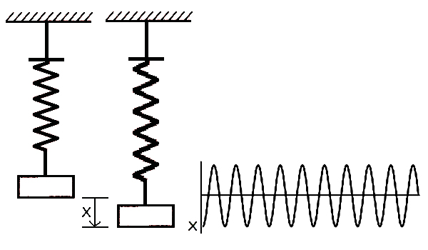
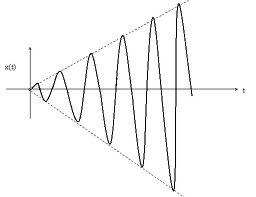
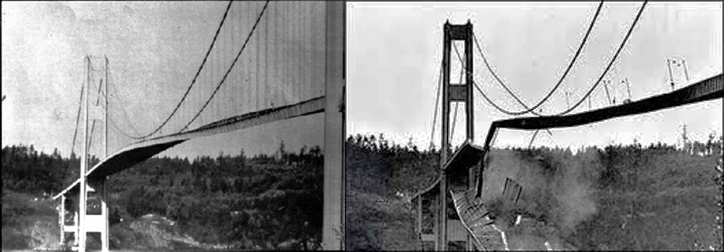
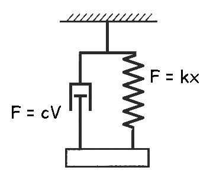
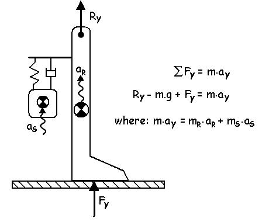
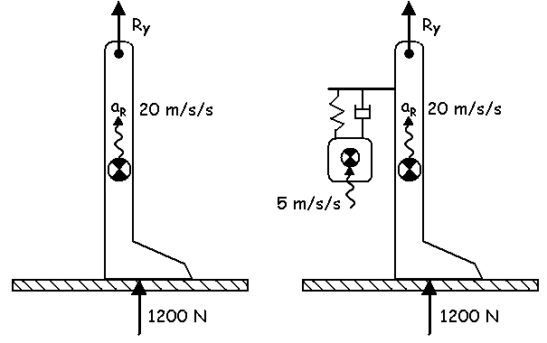
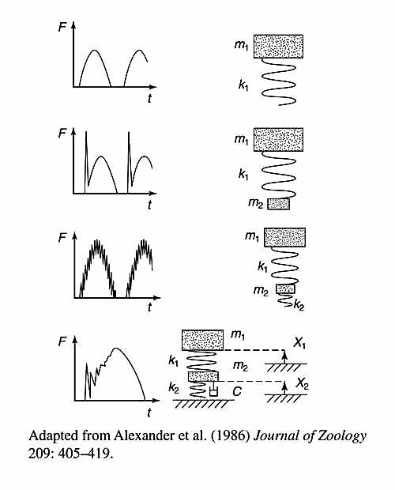

Wobbling Mass in Biomechanics
Much of what we know about the internal kinetics of human movement has been determined using a rigid linked segment analysis. However, we know that human segments are composed of bones and soft tissues like muscle, fascia, skin, organs, etc. The bones are not exactly rigid (see Bone Mechanics) but they are considerably more rigid than the soft tissues. How much of an over-simplification are we making when we perform a rigid linked segment analysis? That is the question that we will explore in this lecture.
Elasticity:
Recall, that elasticity is that property of an object that tends to return to a non-deformed state after being deformed by an external force. Elastic structures store strain energy which was covered in the Strain Energy lecture. Viscosity or damping affects the speed of motion and when combined with elasticity, dissipates the stored energy. In order to understand the dynamics of deforming structures, we need to understand visco-elasticity.

Let us first consider a mass suspended by an elastic (like a spring or rubber band) and we pull it down a distance (x) and then release it (see figure to the right).
The response will be an undamped oscillation as shown in the graph below. The amplitude and frequency of the oscillation depend on the amount of mass and the stiffness of the spring. The larger the mass, the lower the frequency and the greater the stiffness, the higher the frequency. The natural frequency is defined as:
The undamped oscillation occurs because the energy stored in the spring is transferred into kinetic and potential energy as the mass rises. At the top of the oscillation, all of the energy is stored in the potential energy of the mass. As it falls, the potential energy is transferred back into kinetic and strain energy. At the bottom of the oscillation, all of the energy is stored in the strain energy of the spring.

Forced Oscillation:The natural frequency is an important frequency in engineering because if force is applied at the same frequency as the natural frequency the amplitude of the oscillation gets continuous larger until the material reaches its limit of strain and breaks. A singer can shatter a wine class with her voice if she can hold a note that has the same natural frequency as the ringing glass.

Visco-elasticity:
In a situation with pure elasticity, the mass will oscillate forever even without a forced oscillation. However, like friction, there is always some viscosity (often called damping) which causes the oscillations to eventually stop.

The
diagram to
the right shows a system
that is comprised of a mass, a
spring, and a damper. The viscosity of the damper reduces the amplitude
of the oscillation over time.

The lower figure on the left shows the exponential decline in amplitude of the damped oscillation. The viscosity or damping acts like friction and opposes motion until it has dissipated all of the energy that was stored in the spring. The exponential decline is determined by the amount of damping. The force across the spring is dependent on displacement (stretch) while the force across the damper is dependent on velocity.


The
amount of damping
is often called the damping ratio and a damping ratio of 1.0
is called critical damping. In the diagram to the right, we can see
that when the damping is zero (dark blue line), the oscillation is
unaffected. The green line is the response to under damping (0 - 1) and
there is an overshoot and undershoot before reaching the equilibrium
state. The red line is critical damping which achieves the
equilibrium state in the least time without an overshoot. The
light blue line is over damped and slowly achieves the equilibrium
state.
In the case of a forced oscillation, damping increases the stability of the structure and reduces the amplitude of the forced oscillation.
Wobbling Mass:
If we consider the mass of a human limb segment to be composed of a fairly rigid bone visco-elastically attached to soft tissue (muscle, skin, organs, etc.), the motion could differ significantly from a truly rigid structure. Depending on the size of the soft tissue mass, the stiffness and viscosity, the soft tissue mass could move quite independently of the bone mass.

Recall that one of the assumptions that we made with our linked segment analysis was that the CofG within a segment did not change. Now consider the motion of the CofG of segment shown to the right. If we were to drop this system onto a rigid surface, the rigid mass would have a high acceleration while the inertia of the visco-elastically coupled mass would continue to fall and then rebound according to the stiffness and viscosity of the spring and damper.
Let the mass of the rigid segment be mR and the mass of the soft tissue be mS. In order to solve the vertical joint reaction force (Ry), we need to know the amount of the two masses and the independent accelerations of the two masses.
Andrews and Dowling (2000) put accelerometers on the tibia (rigid tissue) and the calf muscle (soft tissue) of human subjects and used DXA to calculate the mass of bone and soft tissue.

The graphs to the right show that when subjects landed rigidly on a force platform with their heel, the acceleration of the rigid mass had a peak of 22g and the soft tissue was a bit lower at 20g. It was found that the even though the impact force was high (almost 4 times body weight), the small difference in accelerations only resulted in a slight difference in vertical knee joint reaction force (VKJRF).
The wobbling mass issue only becomes a concern when the soft tissue mass has a significantly different acceleration than the rigid mass. It is mostly under impact (high acceleration) events that this occurs and tense muscles can significantly increase the stiffness and reduce the independence of the two accelerations.

The other approach would be to model the response of mS according to assumed values of mass, stiffness and viscosity.
Errors Caused By Assumed Rigid Links:
Let's take an example of a vertical ground reaction force of 1200 N, a rigid mass of a leg/foot segment of 4.0 kg and a vertical acceleration of 20 m/s/s of the center of mass of the segment. We would calculate a reaction force of -1081 N. If a better model of the foot/leg segment separated the wobbling mass of the soft tissue such that the bone mass is 0.5 kg and the soft tissue is 3.5 kg and the acceleration of the rigid mass is 20 m/s/s and the acceleration of the wobbling mass is 5 m/s/s. Now the equations yield a reaction force of only -1133 N.
Since the wobbling mass acceleration is lower than the rigid mass acceleration, the joint reaction force from a rigid linked segment model is an under-estimation of the actual forces. The figure below shows the effects of various models on ground reaction forces.

Accelerations in Practice:
The double differentiation of marker data requires smoothing to reduce the high frequency noise. This lowpass filtering has a similar effect as a mechanical mass-spring-damper system such that the segmental accelerations may indeed be more like the composite system pictured above. Another factor is the skin movement which is often thought to be unwanted artifact that should be better controlled. Indeed, the skin movement may cause accelerations to better reflect the wobbling mass.
Bottom Line:
Even though the standard inverse dynamics approach using rigid linked segment models should theoretically under-estimate the joint reaction forces, in practice, data smoothing and skin movement may help reduce the errors in calculating joint reaction forces and net joint moments (albeit for the wrong reasons).
Reference:
Andrews, D.M. and Dowling, J.J. Mechanical modeling of tibial axial accelerations following impulsive heel impact. JOURNAL OF APPLIED BIOMECHANICS. 16:276-288, 2000.